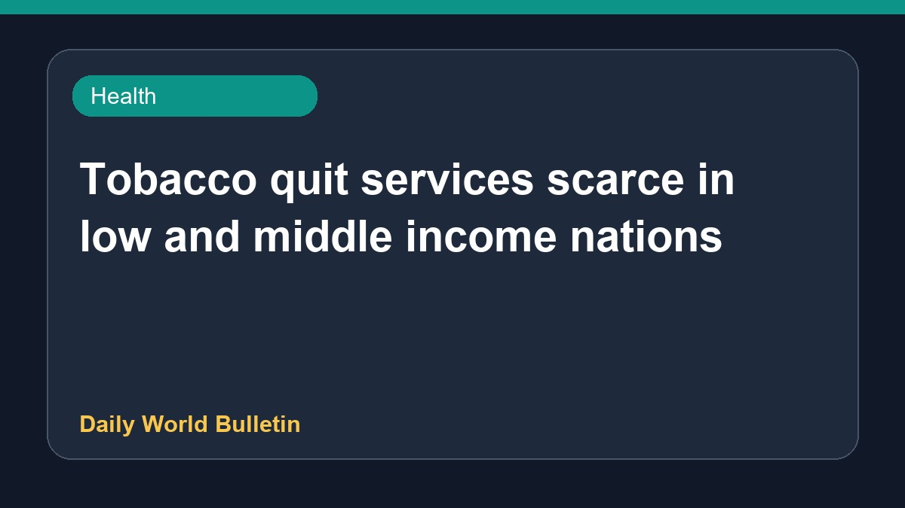

Tobacco quit services scarce in low and middle income nations

Experts report that health systems in developing nations are failing smokers due to a lack of adequate support. Tobacco cessation services remain extremely scarce across low-and middle-income countries. Meanwhile, health professionals suggest that a straightforward three-step method could assist individuals in quitting tobacco consumption. While quitting smoking poses significant challenges in poorer countries, experts emphasize the urgent need for improved cessation resources and stronger health systems to help individuals overcome nicotine addiction.
Original source: Health News Sources
Tobacco quit services remain scarce across low-and middle-income countries - News-Medical ↗
Tobacco quit services remain scarce across low-and middle-income countries - News-Medical ↗